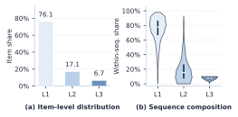
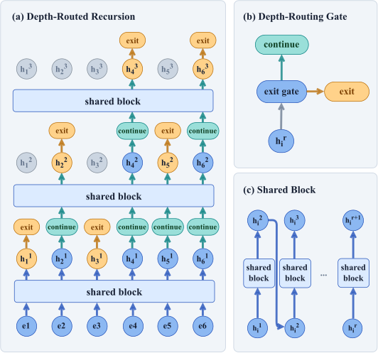

目录 · 6 节
1问题与动机：凭什么每条行为都过一样多层2方法：一个块反复用，每轮问一次要不要继续3核心贡献：计算怎么分配，也是建模的一部分4实验结果：效果和延迟要分开看5局限：速度收益看运行环境6工业实践意义：先看路由把算力花在了哪序列推荐要根据用户按时间排好的历史行为预测下一个交互物品，常规做法是让每条历史行为都堆叠同样多层编码。作者拿训练好的三层 SASRec 做诊断，发现 76.1% 的行为推理一层表征就已收敛，6.7% 要堆叠满三层才稳定，两类行为还经常出现在同一条序列里。统一深度在已收敛的行为上浪费算力，又没给少数难的行为算够。LoopRec 让每条历史行为各自决定堆叠几层，深度按行为分配，而不是按整条请求分配。这篇的核心改动，是把“算几层”从一个全局超参数变成了每条历史行为自己的属性：难的行为可以多算几轮，已经收敛的行为提前停下。
整体结构分三步。先把整段历史过一遍共享编码块，也就是一套参数反复调用的 Transformer 块；然后在每个递归边界，由门控（一个读取当前表征、输出退出概率的轻量网络，论文也叫路由器）逐位置决定退出还是继续，只有继续的位置再过一遍同一个块；最后按每个位置选中的深度读出表示，预测下一个物品。监督信号只有下一物品的交叉熵，训练时另加两个约束门控的正则和一段预热。作者在三个 Amazon 数据集、四类主干上验证，在 Amazon Software 数据集上，以 SASRec 为主干时 NDCG@20 相对提高 5.68%。
1. 问题与动机：凭什么每条行为都过一样多层
今天几乎所有序列编码器，不管是 attention、卷积还是线性循环，都默认每条历史行为过同样多层。三个月前随手点开的东西和昨天反复看的东西，花的算力完全一样。
作者在提方法之前先做了两个诊断。开头的数字来自第一个：在 SASRec（用自注意力建模行为顺序的经典序列推荐模型）里每次只让一个位置提前停止更新，推荐集合不再变化的最浅层，就是这个位置的饱和深度。浅层饱和和深层饱和的位置混在同一条序列里，任何固定深度都顾不全。
第二个诊断更直接，只动最近五条行为的深度，让一个知道真实目标物品的离线搜索器挑最好的深度分配。这个搜索器看得到答案，只是分析工具，线上路由器拿不到未来目标。它回答的问题是：如果每条行为的深度可以分开选，指标能不能比统一深度更高。答案是能，而且搜索器挑出来的分配，很多时候总计算量还更少。这两个诊断比方法本身更有说服力，因为它们在还没有新模型的时候，就证明了按行为分配深度确实有提升空间。
| 环节 | 输入和处理 | 监督或作用 |
|---|---|---|
| 初始编码 | 全部历史位置经过共享主干 | 建立上下文表示 |
| 逐位置递归 | 活跃位置接受退出门控 | 控制每条行为计算深度 |
| 深度相关读出 | 选择深度的状态与输入残差结合 | 输出下一物品预测表示 |
| 训练正则 | 深度使用与路由分数 | 减少深度集中和过早饱和 |

2. 方法：一个块反复用，每轮问一次要不要继续
为什么要共享参数？如果每层参数都不一样，第二层退出的位置和第四层退出的位置就落在不同的表示空间里，后面没法统一打分。LoopRec 的解法是只有一个编码块，反复调用，不管在哪一轮退出，表示都出自同一套参数。论文用 LxRy 描述结构，x 是共享块的层数，y 是最多递归几次，比如 L2R3 就是两层的块最多用三次。
这种共享块反复调用的结构叫 looped Transformer，Universal Transformer 很早就把共享递归和逐位置 halting 放在一起，MoR（Mixture-of-Recursions）也在语言模型上做了 token 级的递归深度分配。区别在决策方式：MoR 要么一开始就给每个 token 定好总深度，要么每一步按固定容量挑 top-k 继续；LoopRec 每一轮都用当前的上下文状态重新判断一次，二元的停或不停，不需要 top-k。放到推荐里，逐轮二元判断比固定容量更合适，因为用户序列的长短和信息密度差异大，top-k 的容量很难设成一个固定值。
具体来说，初始阶段整段历史编码一次。之后每个递归边界，门控读取每个活跃位置的当前状态和递归索引，输出一个标量，过 sigmoid 变成退出概率：
这里 是历史位置， 是当前递归深度， 是该位置此刻的状态， 是深度编码， 是一个很轻的门控网络， 就是 sigmoid。概率过阈值就停，否则继续。先让所有位置吸收一轮上下文再做判断，比一开始就固定深度更合理，因为这时每个位置的状态里已经有了整段序列的信息。
只有继续的位置会组成下一轮的输入，保持原来的相对顺序，用因果掩码，每个位置只能看到它之前的行为。停下来的位置把当前状态冻住，不再更新。到最大递归次数时，剩下的位置一律强制停止。
实现上有个容易出错的地方。下一轮只处理继续的位置，序列的长度和内容都变了，实现时必须严格维护活跃位置的索引和顺序，否则同一个请求在不同 batch 里会算出不一样的结果。动态位置压缩做得好不好，也直接决定速度收益能不能兑现。
读出阶段把每个位置的输入向量和它选中深度的状态结合起来。前向用硬深度，深度相关的权重仍然给路由概率回传梯度，所以门控能直接从推荐目标里学，不需要任何深度标签。共享块保证参数量不随深度增加，深度相关读出则把停止决策和最终预测连起来。

训练最大的麻烦是路由容易塌。如果所有位置都在同一轮退出，模型就退化回固定深度。论文加了一个深度使用正则，把实际硬路由的比例和可微的软概率质量结合起来，防止深度扎堆。
另一个正则管门控过早输出极端分数。概率一旦早早饱和，停止选择就固定了，训练初期还没成形的状态会决定整条训练轨迹。作者借了 MoE 里常用的 router z-loss，惩罚二元门控的对数配分函数过大。
总目标写出来是这样：
是下一物品的交叉熵， 是深度使用正则， 是门控稳定项， 和 分别控制两个正则的强度。后两项只约束路由，物品预测的监督仍然只有目标物品标签。
训练还有个预热阶段。预热时所有有效位置都走满最大深度，路由正则先关掉，让共享主干先学出能用的状态，然后再打开门控。消融里去掉预热，三个数据集都掉点，Software 掉得最多，所以这一步不是可有可无。调参时最该盯的是共享块层数、最大递归次数和预热长度，它们一起决定了能不能学起来，以及实际计算预算有多大。
走一遍请求会更直观（示意）。用户最近五次看过 A、B、C、D、E，候选是 F。初始编码让五个位置互相交换上下文。第一个门控让 A、B 退出，C、D、E 继续；下一轮 C 也退出，D、E 一直走到预算上限。模型按各自选中的状态读出，再给 F 打分。这里的退出轨迹和字母都是举例，线上不会用真实的下一物品替路由器做决定。
3. 核心贡献：计算怎么分配，也是建模的一部分
过去提升序列模型，常见做法是把整段序列统一加长或加深。这篇换了个角度，让模型从数据里学到哪条行为需要多堆叠几层，而且是逐轮判断，可以利用更新后的上下文，比一次性分配深度灵活。
学出来的深度分配有规律：更新的行为和更冷门的物品更常被分到深层。冷门物品统计信号少，表征要多堆叠几轮才收敛；最近的行为离当前意图近，多花点算力也合理。作者还拿按位置、按频次的启发式规则做了对照，学出来的路由平均效果更高，说明这件事不能简单靠规则替代。
论文还设了一个 Seq-level Loop 对照，同样共享递归，但整段序列一起循环，没有逐位置退出。结果是纯共享递归已经能拿到一部分收益，逐位置分配深度在此基础上再往上加，加多少因数据集而异。这组消融把参数复用和计算分配各自的贡献拆开了，是我最看重的一组实验。
共享主干这个设计也让方法不挑 backbone，论文在卷积和线性循环模型上也做了测试。它们聚合序列的方式不同，但都能把编码块反复用，再由门控决定哪些位置继续。
4. 实验结果：效果和延迟要分开看
实验用 Amazon Reviews 2023 的 Software、Office Products 和 Patio 三个类别。每个用户按时间留最后一次交互做测试，用验证集 NDCG@20 选模型。NDCG 是按名次折损的排序质量，MRR 是真实目标排名倒数的平均值。主表报告五次运行的均值。
| 比较 | NDCG@20：固定主干 → LoopRec | 解读 |
|---|---|---|
| SASRec / Software | 0.0944 → 0.0998 | 相对收益报告为 5.68% |
| SASRec / Office | 0.0582 → 0.0595 | 注意力主干也有稳定小幅收益 |
| NextItNet / Patio | 0.0192 → 0.0263 | 卷积主干相对收益较大 |
| LRURec / Software | 0.0958 → 0.1001 | 对线性循环主干同样有效 |
NextItNet 是因果卷积序列模型，LRURec 是线性循环序列模型，主表的四种主干里还有在 SASRec 上加了频域偏置的 BSARec。相对收益用的是作者报告的值，因为表里的绝对指标只保留了四位小数。
Office Products 上的提升很小。我会把结论读成：在匹配的固定深度对照下，四类主干都有提升，幅度差别不小。
速度这块要看清楚口径。测试在单张 A6000 GPU 上只测编码器，不含全量候选打分。L2R4 和同最大深度的固定模型比，编码时间从 91.230 毫秒降到 79.273 毫秒；L2R2 却几乎没变化，哪怕实际执行的计算已经少了。
结构越深，提前退出能省的空间越大；但动态分支、索引整理和一堆小矩阵运算会吃掉一部分收益。作者自己也承认，省下的计算只有一部分能变成墙钟时间。要判断线上值不值，得把编码和候选打分放进完整请求里一起测。
5. 局限：速度收益看运行环境
速度只测了单 GPU 上的编码器时间，不同递归结构的改善幅度差别很大，作者也明确说跳过的计算只能部分转成墙钟收益。他们把稀疏感知的 kernel 和学习最大递归预算列为后续工作，目前最大递归次数还是训练前就定死的。
评估集中在三个同源公开数据集上，历史里的物品都按热启动处理。工业里的超长行为序列、特征交叉、候选打分，成本结构和这里不一样，论文没有直接覆盖。
6. 工业实践意义：先看路由把算力花在了哪
如果你手上有用户序列主干，最便宜的第一步是在旁边记录位置、物品频次和选中的深度，看模型是不是把额外计算花在了新近或稀疏的行为上。
上线前，拿同最大有效深度的固定主干做速度对照，编码器延迟和完整请求延迟分开测。再加一组保留共享参数、去掉自适应门控的消融，就能分清收益到底来自参数复用还是计算分配。对靠用户历史做个性化排序的系统，这几组实验直接对应效果和服务成本之间的取舍。序列越长、层数越深的主干越值得试，因为能提前退出的位置更多、省下的计算也更多；前提是推理框架能高效处理动态长度的 batch。
讨论
欢迎补充实验细节、复现经验或不同看法。需 GitHub 登录。
正在加载讨论…